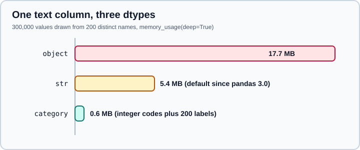

Scaling to Large Datasets
|
This content was generated with the assistance of AI and should be verified against the official documentation before being relied on in production. |
This page targets pandas 3.1 on Python 3.13 or 3.14 with NumPy 2.5 and PyArrow 26, and was checked in October 2026. Every example was run on pandas 3.1.0, with Dask 2026.8, Polars 2.1 and DuckDB 2.0 for the last section. Sizes and timings come from one laptop and a synthetic file, so use them for relative size only.
pandas holds a whole table in memory, so "large" means large compared with your RAM, and a useful rule of thumb is that many operations need working space of several times the size of the data. The official Scaling to large datasets guide gives three techniques, which are the structure of this page: load less data, use efficient dtypes, and process in chunks. A fourth step, moving to another engine, comes when those are not enough. Speed, as opposed to memory, is covered on Enhancing Performance.
The example data
All examples use a synthetic sensor-readings table with 300,000 rows and 17 columns: an id, a station name with 5 values, a sensor name with 200 values, a temperature, a humidity, a timestamp, a short note with 4 values and ten extra float columns. The script creates a CSV file, one Parquet file and three smaller Parquet part files.
import numpy as np
import pandas as pd
rng = np.random.default_rng(7)
n = 300_000
df = pd.DataFrame({
"id": np.arange(n),
"station": rng.choice(["north", "south", "east", "west", "harbour"], size=n),
"sensor": rng.choice([f"sensor-{i:03d}" for i in range(200)], size=n),
"temperature": rng.normal(15, 8, size=n).round(2),
"humidity": rng.integers(10, 100, size=n),
"reading_at": pd.Timestamp("2026-01-01") + pd.to_timedelta(rng.integers(0, 3600 * 24 * 90, size=n), unit="s"),
"note": rng.choice(["ok", "check", "calibrate", "replace"], size=n),
})
for c in range(10):
df[f"extra_{c}"] = rng.normal(size=n)
df.to_csv("readings.csv", index=False)
df.to_parquet("readings.parquet")
for i, start in enumerate(range(0, n, 100_000)):
df.iloc[start:start + 100_000].to_parquet(f"part-{i}.parquet")
print(df.shape)Output:
(300000, 17)
Source: Scaling to large datasets, which builds a similar synthetic time-series dataset.
The CSV file is about 77 MB and the Parquet file about 32 MB on disk.
Step 0: measure memory
You cannot shrink what you have not measured. memory_usage(deep=True) reports bytes per column, and deep=True is needed for text columns, because the shallow figure counts only the pointers for object data. df.info(memory_usage="deep") prints the same total with the dtypes.
import pandas as pd
df = pd.read_csv("readings.csv", parse_dates=["reading_at"])
print(df.dtypes)
print(f"{df.memory_usage(deep=True).sum() / 1e6:.1f} MB")
print(df.memory_usage(deep=True).sort_values(ascending=False).head(5).div(1e6).round(1))Output:
id int64 station str sensor str temperature float64 humidity int64 reading_at datetime64[us] note str extra_0 float64 ... dtype: object 47.0 MB sensor 5.4 note 4.1 station 3.9 extra_1 2.4 dtype: float64
Source: DataFrame.memory_usage.
Two things in the output are specific to pandas 3. The text columns are str, not object, because the str dtype is the default since pandas 3.0. And the timestamp is datetime64[us], microsecond resolution, which is the default for parsed datetimes in 3.0. Both came with the same release, which is why memory advice written for pandas 1 or 2 gives different numbers.
The largest columns are the text ones, even though a handful of distinct strings is repeated 300,000 times. That is the first target.
Step 1: load less data
The cheapest column to optimise is the one you never read. Select columns and rows at read time, not after loading.
import pandas as pd
import pyarrow.parquet as pq
# CSV: only the columns you need, and a peek at the first rows
cols = ["station", "temperature", "humidity", "note"]
raw = pd.read_csv("readings.csv", usecols=cols)
print(f"4 columns, default dtypes: {raw.memory_usage(deep=True).sum() / 1e6:.1f} MB")
print(pd.read_csv("readings.csv", nrows=3).shape)
# Parquet: column projection and row filtering are done by the reader
sub = pd.read_parquet("readings.parquet", columns=["station", "temperature"], filters=[("station", "==", "north")])
print(sub.shape, sub["station"].unique().tolist())
print(pq.ParquetFile("readings.parquet").metadata.num_row_groups, "row group(s)")Output:
4 columns, default dtypes: 12.8 MB (3, 17) (59747, 2) ['north'] 1 row group(s)
Source: Scaling to large datasets and pandas.read_parquet.
-
usecolslimits a CSV read to the named columns. The saving is the memory for the columns you skip. -
nrowsreads only the first rows, which is the right way to inspect a very large file. -
read_parquetacceptscolumnsandfilters. Parquet is a columnar format, so unselected columns are never decoded, and filters on columns that have row-group statistics can skip whole row groups. The file here has a single row group, so the filter only saves memory. Writing larger files with several row groups, or partitioned directories, lets filters skip data on disk too. -
Not every format supports column selection. CSV needs
usecols, Excel hasusecolstoo, but pickle and plain JSON must be read whole. See CSV & Text Files and Parquet, Feather, ORC & Iceberg.
If you can choose the file format, choose Parquet. It is typed (no re-parsing of numbers and dates on every load), compressed, and column-addressable. Convert a large CSV once and read the Parquet afterwards.
Step 2: use efficient dtypes
The default dtype for a column is chosen for correctness, not for size. Three changes recover most of the memory.
import pandas as pd
cols = ["station", "temperature", "humidity", "note"]
slim = pd.read_csv(
"readings.csv",
usecols=cols,
dtype={"station": "category", "note": "category", "humidity": "uint8", "temperature": "float32"},
)
print(f"with category and small numerics: {slim.memory_usage(deep=True).sum() / 1e6:.1f} MB")
print(slim.dtypes.to_dict())
# or downcast after the fact
raw = pd.read_csv("readings.csv", usecols=cols)
h, t = raw["humidity"], raw["temperature"]
print(h.dtype, "->", pd.to_numeric(h, downcast="unsigned").dtype)
print(t.dtype, "->", pd.to_numeric(t, downcast="float").dtype)Output:
with category and small numerics: 2.1 MB
{'station': CategoricalDtype(categories=['east', 'harbour', 'north', 'south', 'west'], ordered=False, categories_dtype=str), 'temperature': dtype('float32'), 'humidity': dtype('uint8'), 'note': CategoricalDtype(categories=['calibrate', 'check', 'ok', 'replace'], ordered=False, categories_dtype=str)}
int64 -> uint8
float64 -> float32
Source: Use efficient datatypes and pandas.to_numeric.
The four columns went from 12.8 MB to 2.1 MB, an 84 percent reduction, without losing information about the station or note. Passing dtype= to read_csv is better than converting after the read, because the large intermediate frame is never built.
Categoricals
A category stores each distinct value once, plus a small integer code per row. For a column with few distinct values it is much smaller than text, and group-bys and comparisons run on the codes. The next figure compares one text column under the three dtypes.
import pandas as pd
s_str = pd.read_csv("readings.csv", usecols=["sensor"])["sensor"]
s_obj = s_str.astype(object)
s_cat = s_str.astype("category")
for name, s in [("str (default)", s_str), ("object", s_obj), ("category", s_cat)]:
print(f"{name:<14}{s.dtype!s:<10}{s.memory_usage(deep=True) / 1e6:6.1f} MB")Output:
str (default) str 5.4 MB object object 17.7 MB category category 0.6 MB
Source: Categorical data and Working with text data.

Three consequences follow:
-
In pandas 3 the default
strdtype already cuts text memory to about a third of the oldobjectlayout, without any code change. Old advice that says "convert strings to categories to save memory" still helps, but the starting point is lower. -
A category pays off when the number of distinct values is small compared with the number of rows. For a column where almost every value is unique, such as an id, a category is larger than text.
-
A category has a fixed set of allowed values. Assigning a value outside the categories raises
TypeError, and converting with a fixed list of categories turns unknown values into missing values with aPandas4Warningthat says this will raise in a future version. Categories therefore suit stable code lists, not free text. See Categorical Data.
Downcasting numbers
An integer column is int64 by default, even when the values fit in uint8. pd.to_numeric(..., downcast="unsigned") picks the smallest type that holds the actual values, and downcast="float" picks float32.
-
A smaller integer type can overflow if you later add or multiply large numbers. Arithmetic on
uint8wraps around instead of widening: in a quick check, auint8value of 200 plus 100 gave 44, while a Python integer outside the type’s range, such as 300, raisedOverflowError. Downcast columns you only store and filter, and convert back withastypebefore computing with them. -
float32has about seven significant decimal digits. Sums of manyfloat32values lose accuracy, so keepfloat64for accumulation, finance and statistics, and usefloat32for inputs to a model or for measurements that are already low in precision. -
Missing integers need the nullable
Int64family (see Nullable Integer & Boolean), orNaNin a float column.
PyArrow-backed dtypes
pandas can store columns in Arrow arrays. Reading Parquet with dtype_backend="pyarrow" keeps the Arrow types:
import pandas as pd
a = pd.read_parquet("readings.parquet", columns=["station", "humidity"], dtype_backend="pyarrow")
print(a.dtypes.to_dict())Output:
{'station': large_string[pyarrow], 'humidity': int64[pyarrow]}
Source: PyArrow functionality.
Arrow dtypes avoid conversions when the data goes to or from Parquet, Polars or DuckDB, and they handle missing values without switching integers to floats. PyArrow is still an optional dependency of pandas 3.1 (the PDEP that would make it required was postponed), so older notes saying it becomes mandatory with pandas 3.0 are out of date. See PyArrow-Backed Data.
Step 3: process in chunks
When the whole file does not fit, but every piece does, read it in pieces, reduce each piece to a small result, then combine the results. chunksize makes read_csv return an iterator of frames, and it can be used as a context manager so the file is closed even on an error.
import pandas as pd
# 1. chunked CSV aggregation: only one chunk is in memory at a time
partials = []
with pd.read_csv("readings.csv", usecols=["station", "temperature"], chunksize=100_000) as reader:
for chunk in reader:
partials.append(chunk.groupby("station")["temperature"].agg(["sum", "count"]))
total = pd.concat(partials).groupby(level=0).sum()
print((total["sum"] / total["count"]).round(3))
# 2. same answer on the full file
full = pd.read_csv("readings.csv", usecols=["station", "temperature"])
print(full.groupby("station")["temperature"].mean().round(3))Output:
station east 14.973 harbour 15.059 north 15.039 south 15.047 west 14.997 dtype: float64 station east 14.973 harbour 15.059 north 15.039 south 15.047 west 14.997 Name: temperature, dtype: float64
Source: Use chunking and Iterating through files chunk by chunk.
The key is to keep a decomposable partial result. A mean is not decomposable, but a sum and a count are, so the code keeps both and divides at the end. The same idea works for sums, counts, minima, maxima and value_counts. A median, a quantile or an exact distinct count is not decomposable, so those need another approach: a sample, an approximate algorithm, or a different engine.
Parquet can be read in batches without loading the file, using PyArrow directly, and a directory of part files can be combined after selecting only the needed columns.
import glob
import pandas as pd
import pyarrow.parquet as pq
parts = sorted(glob.glob("part-*.parquet"))
combined = pd.concat(
(pd.read_parquet(p, columns=["id", "humidity"]) for p in parts), ignore_index=True
)
print(combined.shape)
rows = 0
for batch in pq.ParquetFile("readings.parquet").iter_batches(batch_size=50_000, columns=["humidity"]):
rows += batch.num_rows
print(rows)Output:
(300000, 2) 300000
Source: Use chunking and pyarrow.parquet.ParquetFile.
Chunking becomes awkward for operations that need all rows at once: a join between two large tables, a sort, a group-by with many groups, or a window function. The official guide says to move to a library built for out-of-core work when the workflow gets complex.
Step 4: use another engine
When selecting, typing and chunking are not enough, the official guide’s last section sends you to the pandas ecosystem page. The pandas ecosystem page has a "Scaling pandas" section (the guide’s own link to an "out-of-core" anchor no longer matches a section title there). It lists Bodo, BigQuery DataFrames, Dask, Ibis, the pandas API on Spark and Modin. Two related tools outside that list, Polars and DuckDB, are covered in Beyond the Core. The three examples below compute the same mean temperature per station from the Parquet files, and each returns a pandas object at the end.
import dask.dataframe as dd
ddf = dd.read_parquet("part-*.parquet", columns=["station", "temperature"])
print(ddf.npartitions)
result = ddf.groupby("station")["temperature"].mean() # lazy: builds a task graph
print(result.compute().round(3).sort_index()) # runs itOutput:
3 station east 14.973 harbour 15.059 north 15.039 south 15.047 west 14.997 Name: temperature, dtype: float64
Source: Dask DataFrame documentation.
import duckdb
import polars as pl
print(duckdb.sql("""
SELECT station, round(avg(temperature), 3) AS mean_temp
FROM 'readings.parquet'
GROUP BY station ORDER BY station
""").df())
lazy = (
pl.scan_parquet("readings.parquet")
.group_by("station")
.agg(pl.col("temperature").mean().round(3).alias("mean_temp"))
.sort("station")
)
print(lazy.collect().to_pandas())Output (both queries print the same table):
station mean_temp 0 east 14.973 1 harbour 15.059 2 north 15.039 3 south 15.047 4 west 14.997
Source: DuckDB Python client and Polars lazy API.
The pattern is the same in all three: express the computation, let the engine read only the needed columns and row groups, and convert the small result to pandas. Dask splits the work across partitions and keeps the pandas API. Polars and DuckDB have their own query languages and are often faster for scans and aggregations on one machine. This page does not recommend one over the others, because the best choice depends on the team, the data and the operation, as discussed on Choosing Tools & Learning Path.
Source: decision flow drawn for this page from Scaling to large datasets.
Reading speed
Memory is not the only cost of a large file. pandas 3.1 can read big CSV files with several threads using the default C engine, and mode.max_threads controls how many.
import time
import pandas as pd
def clock(label, fn):
t0 = time.perf_counter()
out = fn()
print(f"{label:<34}{(time.perf_counter() - t0) * 1000:8.0f} ms")
return out
clock("read_csv, default C engine", lambda: pd.read_csv("readings.csv"))
with pd.option_context("mode.max_threads", 1):
clock("read_csv, mode.max_threads = 1", lambda: pd.read_csv("readings.csv"))
clock("read_csv, engine='pyarrow'", lambda: pd.read_csv("readings.csv", engine="pyarrow"))
clock("read_parquet", lambda: pd.read_parquet("readings.parquet"))Output:
read_csv, default C engine 30 ms read_csv, mode.max_threads = 1 85 ms read_csv, engine='pyarrow' 30 ms read_parquet 28 ms
Source: CSV and text files and Options & Settings.
The numbers are indicative only. Parquet and CSV read about equally fast here because the example is small, but Parquet is less than half the size on disk, keeps the types, and lets you read a subset of columns, which is where the saving grows with width.
Pitfalls
-
Measuring with
deep=False. Text memory is underestimated withoutdeep=True. -
Building the full frame, then slimming it. Pass
usecolsanddtypeto the reader so the large frame never exists. -
Cutting the data with a lossy downcast. Check
df.describe()before and after, and keep an unmodified copy of the file. -
Combining chunk results incorrectly. Averages, medians and distinct counts are not additive. Keep sums and counts, or use another engine.
-
Forgetting that copies cost memory. Chained operations create temporaries. Delete frames you no longer need, and see Copy-on-Write for when pandas shares or copies memory.
-
Treating pandas as a database. If you filter and join the same big file repeatedly, load it into a database or a Parquet dataset with partitions once. See SQL aggregate and window functions.
Outdated advice you may still meet
| Statement in older books and tutorials | Date | State in pandas 3.1 |
|---|---|---|
Convert string columns to |
pandas 1 and 2 era |
Still useful for repeated values, but the default |
|
Before pandas 3.1 |
The C engine reads large files in parallel in pandas 3.1, controlled by |
PyArrow becomes a required dependency in pandas 3.0 |
2023 plans (PDEP-10) |
Postponed. PyArrow is optional in pandas 3.1, and the |
Dask or Modin are the only ways to scale pandas |
Older blog posts |
Polars and DuckDB read Parquet and CSV directly and are common alternatives for single-machine work. |
Source: What’s new in pandas 3.0.0 and What’s new in pandas 3.1.0.